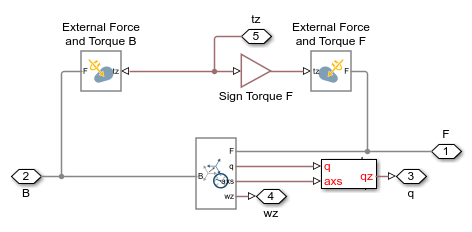

Joint Limits and Friction Methods in a Hinge
This example shows three methods of extending Simscape Multibody models with additional physical effects using Simscape. Review the three methods below to determine which method is best suited to your needs.
The mechanical system is a hinge modeled with a revolute joint. The range of joint motion can be limited directly in Simscape Multibody joint blocks starting in R2019a. Hard stops and friction are added to the joint in the other models. At the start of simulation, gravity pulls the second link down, rotating the hinge to its limit. The friction and joint limit affect how the system behaves.
For all methods, the position and orientation of the two frames connected to the joint must be coordinated with the limits set in the hard stop.
Contents
Model
Foundation Library Method
This method is easily assembled using Foundation library elements. However, position information from the Revolute Joint is not communicated to the Simscape network. This is only an issue for blocks such as the hard stop block which need the initial position of the joint. For this method, a MATLAB variable is used to set the initial position in the Revolute Joint and the Hard Stop block.
Simscape Physical Signals are used to connect the Simscape Multibody Joint and the Simscape 1D mechanical blocks. No algebraic loop is created and the equations from both models are solved simultaneously. To use this method, set Actuation-->Torque to "Provided by Input" and enable velocity sensing within the Revolute Joint block.
Interface subsystem built using Foundation Library blocks:
Joint Actuation Method
This method communicates position and velocity information to the Simscape blocks used to implement the physical effect. The blocks used here are custom Simscape blocks that use the same equations as in the Foundation library. The code is open and can be modified.
Simscape Physical Signals are used to connect the Simscape Multibody Joint to the custom Simscape blocks. No algebraic loop is created and the equations from both portions of the model are solved simultaneously. To use this method, set Actuation-->Torque to "Provided by Input" and enable position and velocity sensing within the Revolute Joint block.
Custom Simscape blocks implementing friction and joint limit:
Transform Sensor Method
This method communicates position and velocity information to the Simscape blocks used to implement the physical effect. The blocks used here are custom Simscape blocks that use the same equations as in the Foundation library. The code is open and can be modified.
An advantage of this method is that it does not require adjusting settings within the joint block, which makes it easy to add and remove. However, the mathematical operations prescribed by the joint are not reused in this configuration, so there is a small additional mathematical cost to this method.
Simscape Physical Signals are used to connect the Simscape Multibody Joint to the custom Simscape blocks. No algebraic loop is created and the equations from both portions of the model are solved simultaneously.
Custom Simscape blocks implementing friction joint limit
Interface to Simscape Multibody model:
Simulation Results from Simscape Logging
Mechanics Explorer Animation